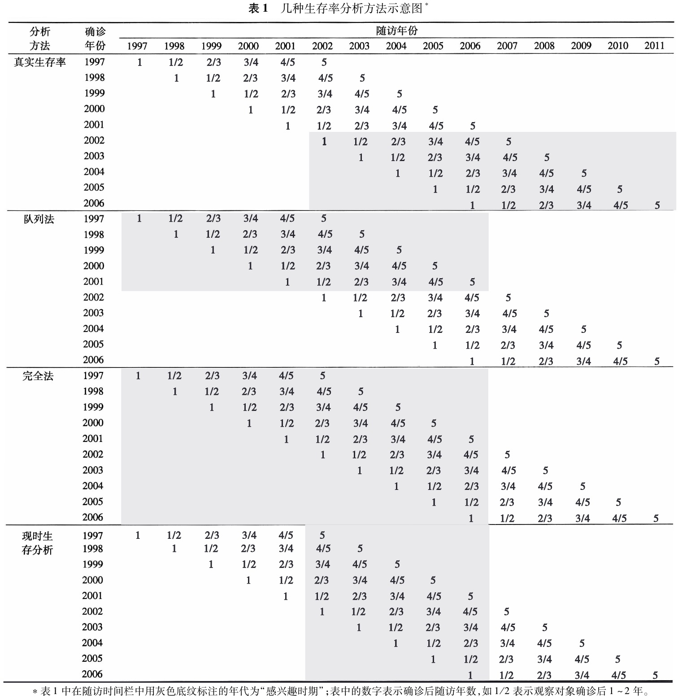

基于”periodR”包利用现时生存分析法计算人群癌症5年相对生存率
基于人群肿瘤登记数据的5年相对生存率分析实践
2023年4月9日
肿瘤登记
数据分析
R
癌症5年生存率是评估癌症诊疗水平的一个重要指标，本篇博文介绍了如何利用R语言"periodR"包基于人群肿瘤登记数据计算人群癌症5年相对生存率。
人群癌症5年生存率是评估包括癌症筛查、诊断、治疗以及管理等癌症综合防治效果的关键指标，是制定和优化癌症防控政策和措施的重要参考数据，它与一个地区的基础医疗水平、诊断设备的可及性等多种因素相关(1)。 本篇博文将介绍如何利用人群肿瘤登记数据进行估计人群癌症5年相对生存率。
1 基本概念
什么是5年生存率
通俗的讲，5年生存率是就是诊断癌症后，生存期满5年的病人所占的比例。
1.1 相对生存率
根据死因竞争风险分析理论，癌症病人的死亡危险分别来自两个相互独立的方面:病人所患疾病(癌症)和除此之外的其它方面。后者指不同性别、年龄、种族和年代的人群本身所存在的基础死亡危险。它们分别可由研究人群的观察生存率和相应的一般人群的期望生存率来反映。
相对生存率定义为研究人群的观察生存率与假定其为一般人群时的期望生存率之比,校正了诸如性别、年龄、种族和年代等因素对病人生存情况的影响。因而用相对生存率作为地区或人群间生存率水平的比较指标,比观察生存率能更好地说明问题。
观察生存率反映的是研究人群的总的死亡危险,而相对生存率反映的是肿瘤的超额死亡危险。如果相对生存率越接近于 100%,则表明研究人群的预后越好,反之越差。所以它既可以象观察生存率一样用于描述研究人群的生存水平或预后优劣,也可以作为观察生存率的标化指标。
1.2 感兴趣时期
我们在分析癌症生存率之前，首先要确定一段时间范围作为“感兴趣时期”，本篇博文的分析将把“2017-2019年”作为感兴趣时期，我们要计算这个时期癌症病例的5年生存率，最真实准确的方法是将2017-2019年的确诊的癌症病例分别随访至2022-2024年，然后计算活满5年的人数所占的比例。在当前的时间（2023年），很显然无法得到全部癌症病例的5年随访数据来计算真实生存率，我们就需要采用其他方法进行估算。
1.3 完全数据
在癌症病例的随访过程中，能够明确观察记录到病例的生存时间，或者发生终点事件的具体时间，这样的数据为完全数据。生存时间是指从规定的起始观察事件到发生特定的终点事件之间的经历的时间跨度。在人群肿瘤登记数据的生存分析中，起始事件一般为明确诊断为癌症，而终止事件一般为因癌症死亡。
1.4 不完全数据
与完全数据相反，研究结束时，研究对象发生了研究设定的终点事件之外的其他事件，从而导致无法明确记录从起始观察到发生终点事件之间的生存时间，这类数据称之为不完全数据。
在人群肿瘤登记数据中，在癌症病例随访过程的截止不是由”癌症死亡”引起的，而是由其他原因引起。
不完全数据分为：删失数据和截尾数据。
不完全数据的主要原因有：
- 失访： 失去联系
- 退出： 死于非研究因素或非处理因素而退出研究。对于人群肿瘤登记数据来说，如果癌症患者死于癌症以外的其他原因，如意外、交通事故等，也是退出。
- 终止： 因为已经到研究设定的随访截止日期而终止随访观察，但是研究对象仍然存活。
1.5 删失和截尾
删失的分类
- 左删失：研究对象在某一时刻开始接受观察，但是在该时间点之前，研究所感兴趣的事件已经发生，无法明确具体时间。
- 右删失：在进行随访观察中，研究对象观察的起始时间已知，但终点事件发生的时间未知，无法获取具体的生存时间，只知道生存时间大于观察时间。
截尾是所有样本的综合特性，指的是观察的总体是有偏的，只有当事件的失效时间出现在观测区间内，我们才能知道这个事件及其观测数据的存在。
- 左截尾（left truncation）：只能观测到一个时间点之后发生的失效事件。左截尾时间点之前发生的失效事件不知情/不关心（如样本来自退休中心，都是>60岁的老人）。
- 右截尾（right truncation）：只能观测到一个时间点之前发生的失效事件。右截尾时间点之后发生的失效事件不知情/不关心
2 现时生存分析方法介绍
2.1 不同生存率估计方法比较
相对生存率的估计方法有队列法（cohort method）、完全法（complete method）、现时生存分析法（period survival analysis）、混合法（hybrid method）和预测法（projection method），不同的生存率估计方法纳入的确诊病例和随访时间有所不同，具体不同可以见下图(2)。
以上不同的方法具有不同的优缺点，传统的队列法和完全法由于纳入的病例中均包含了感兴趣时期之前确诊的病例，因此不能反映最新最及时的生存情况。
2.2 现时生存分析
现时生存分析由德国流行病学家 Hermann Brenner于1996年首先提出，至2002年逐渐发展成熟(1,3–5)。
现时生存分析（period survival analysis）纳入的研究对象分为两部分，一部分是感兴趣时期新确诊的所有病例，另一部分是感兴趣时期之前确诊而且在感兴趣时期仍然存活的病例。本研究的感兴趣时期设定为2017-2019年，那研究对象就需要纳入2017-2019年期间所有新确诊癌症病例以及2017-2019年之前确诊并在2017-2019年期间仍存活的癌症病例(6)。
现时生存分析在感兴趣时期纳入了新确诊癌症病例数据和随访数据，因此该方法更接近真实生存率。
2.3 现时生存分析的估计精度
由于现时生存分析方法纳入的病例数相对于完全法来说要少，因此，该方法估计生存率的精确度和稳健度比其他方法偏低，估计生存率的方差也偏大一些，因此，我们在利用该方法估计生存率的时候应注意把握估计精确度和时效性之间的平衡。
但是对于省级人群肿瘤登记数据来说，数据样本量较大，生存率估计的精度能够得到保证，因此，评估的时效性成为优先考虑的问题，现时生存分析成为评估人群癌症生存率的优先选项(2,7)。
3 统计软件包的安装
本篇博文介绍利用现时法统计模型估计癌症5年生存率，这种方法能够提高生存率估计的时效性。我们将使用Brenner等编写的R包”periodR”进行相对生存率的估计，你可以在这里下载R包，并安装使用(5,8)。
点开链接之后，可以根据自己使用的操作系统和R语言版本选择相应的安装包。

下载之后，我们可以看到一个名为periodR_1.0-6.tar.gz的压缩包，使用下面的R语言安装所下载的R包。
4 数据准备
4.1 数据来源
本篇博文拟分析河南省肿瘤登记处覆盖地区的癌症患者5年相对生存率，数据来源分为两部分，第一部分为肿瘤登记地区癌症患者生存信息用于计算观察生存率，另一部分来源于各肿瘤登记处上报的寿命表数据用于计算一般人群的期望生存率。
4.2 肿瘤登记处的筛选
我们要使用河南省肿瘤登记数据估计河南省癌症5年相对生存率，首先要做的是选择使用哪些登记处的数据进行生存分析，河南省肿瘤登记已经覆盖全省人口的90%以上，但是数据质量差异很大。
为了使生存分析的结果能够真实反映河南省癌症人群的真实生存情况，我们选择纳入分析的登记处必须满足下面的条件，即其2014年肿瘤登记数据被纳入《河南省肿瘤登记年报》，这样纳入的癌症病例能够基本反映登记地区的癌症病人总体的发病、死亡及生存情况。
提前加载数据分析相关的R包
library(tidyverse)
library(haven)
library(Hmisc)
library(canregtools)
library(lubridate)
library(periodR)
library(flextable)
library(kableExtra)
library(gtsummary)筛选入选河南省肿瘤登记年报的登记处数据。
代码
## 从code字典里筛选出2014年年报纳入的登记处
registrys <- mdb.get("code.mdb",tables = c("registry")) %>%
filter(report2014==1) %>%
select(areacode,city,county)
areacodes <- registrys$areacode
registrys$areacode <- as.character(registrys$areacode)
## 读取肿瘤登记数据
canreg <- read_sas("tumorinfo.sas7bdat.zip")
canreg <- canreg %>%
#把入选2014年年报的登记处筛选出来
filter(areacode %in% areacodes)4.3 按照现时生存分析筛选病例
考虑到我们设定的”感兴趣时期”为2017-2019年，按照现时生存分析方法纳入病例的原则，我们需要纳入2017-2019年期间新诊断的所有癌症患者以及在这个时期之前诊断且在2017-2019年期间内仍存活的癌症病例(9)。
按照上面的筛选标准，继续对上一步输出的数据进行范围筛查。
4.4 限制生存分析的癌种范围
我们选择分析的癌种范围与《国家肿瘤登记年报》报告的癌种范围一致，即所有恶性肿瘤和中枢神经系统良性肿瘤。
代码
## 把数据限制在上报C00-C98,D32-33,D42-43,D45-47范围之内
analysis <- canreg %>%
mutate(autoicd10=toupper(autoicd10),
type=substr(autoicd10,1,1)) %>%
mutate(icd_number = as.numeric(gsub("[^0-9\\.]", "", autoicd10))) %>%
filter((type=="C" & between(icd_number,0,98.9))|
(type=="D" & between(icd_number,32,33.9))|
(type=="D" & between(icd_number,42,43.9))|
(type=="D" & between(icd_number,45,47.9))) 4.5 对删失数据进行处理
本研究的随访截止日期设定为2019年12月31日，我们按照这个截止日期进行结尾数据的手工处理。
代码
analysis <- analysis %>%
mutate(diagage = trunc((birthda %--% inciden) / years(1)),
icdd= classify_icd10(autoicd10),
follow = case_when(
!is.na(deathda) & dy <= 2019 ~ deathda,
!is.na(deathda) & dy > 2019 ~ ymd("2019-12-31"),
is.na(deathda) ~ ymd("2019-12-31")),
vitstat = case_when(
!is.na(deathda) & dy <= 2019 ~ 2,
!is.na(deathda) & dy > 2019 ~ 1,
is.na(deathda) ~ 1),
fm = month(follow),
fy = year(follow))4.6 对待分析的分组变量进行处理
代码
analysis <- analysis %>%
mutate(
area_type =ifelse(areacode %in% c("410302","410303","410304","410305",
"410602","410603","410611",
"411102","411103","411104",
"411202","411303"),"Urban","Rural"),
agegrp = cut(diagage,
breaks = c(0, 15, 40, 65, 85, Inf),
labels = c("0-14 岁","15-39 岁",
"40-64 岁","65-84 岁",
">84 岁"),
right = FALSE),
agegrp2 = findInterval(diagage,c(15,40,65,85)),
period = case_when(
dy %in% c(2010,2011,2012,2013)~ "2010-2013",
dy %in% c(2014,2015,2016) ~ "2014-2016",
dy %in% c(2017,2018,2019) ~ "2017-2019")
) %>%
filter(!(sex=="1"&icdd%in%c("子宫体","子宫颈","乳房","卵巢"))) %>%
filter(!(sex=="2"&icdd%in%c("前列腺","睾丸"))) %>%
mutate(areacode2 = case_when(
areacode %in% c("410302","410303","410304","410305")~ "410300",
areacode %in% c("410602","410603","410611") ~ "410600",
areacode %in% c("411102","411103","411104") ~ "411100",
.default = areacode )) %>%
mutate(basi2=ifelse(inciden==deathda&!is.na(deathda),0,basi)) %>%
mutate(state=ifelse(areacode2=="410300" & state=="9", "1", state))5 质量控制
在进行5年相对生存率的计算之前，我们需要先评估一下各个登记处的随访的质量情况，包括DCO数据的比例、失访的情况、最终纳入分析数据的病理诊断比例等来对数据质量进行评估。
代码
submit <- analysis %>% count(areacode2)
dco <- analysis %>%
filter(basi2==0) %>%
count(areacode2)
status <- analysis %>%
filter(!basi2==0,!(state %in% c("1","2"))) %>%
count(areacode2)
final <- analysis %>%
filter(!basi2==0) %>%
filter((state %in% c("1","2")))
selected <- final %>% count(areacode2)
mv <- final %>% filter(basi %in% c("5","6","7")) %>% count(areacode2)
mp <- final %>% filter(reco =="3") %>% count(areacode2)
result <- submit %>%
left_join(dco,by="areacode2") %>%
left_join(status,by="areacode2") %>%
left_join(selected,by="areacode2") %>%
left_join(mv,by=c("areacode2")) %>%
left_join(mp,by=c("areacode2"))
colnames(result) <- c( "areacode","submit","dco","missfol","analysis","mv","mp")
result <- result %>%
replace_na(list(missfol=0,mp=0))
result1 <- result %>%
summarise(across(c(submit,dco,missfol,analysis,mv,mp),sum)) %>%
mutate(areacode="合计")
result <- rbind(result,result1) %>%
mutate(dco_p=round(dco/submit*100,1),
missfol_p=round(missfol/submit*100,1),
mv_p=round(mv/analysis*100,1),
mp_p=round(mp/analysis*100,1))
urban <- c("410300","410600","411100","411202","411303")把上面计算的结果绘制成可以展现的表格，从下面 表 1 中可以看出入选登记处的数据质量情况，包括DCO、失访情况、以及最终纳入分析的病例数、多原发比例、以病理诊断比例等。
代码
t1 <- result %>%
mutate(a=paste0(dco,"(",dco_p,"%)"),
b=paste0(missfol,"(",missfol_p,"%)"),
c=paste0(mp,"(",mp_p,"%)"),
d=paste0(mv,"(",mv_p,"%)"),
type=ifelse(areacode %in% urban,"城市","农村"),
type=ifelse(areacode =="合计","--",type)) %>%
left_join(registrys,by="areacode") %>%
mutate(county=case_when(
areacode=="410300"~"洛阳市",
areacode=="410600"~"鹤壁市",
areacode=="411100"~ "漯河市",
areacode=="合计"~"合计",
.default = county
)) %>%
select(county,type,submit,a,b,analysis,c,d) %>%
kbl(col.names = c("登记处","类型","病例数","DCO,n(%)","失访,n(%)",
"病例数","多原发,n(%)","病理诊断,n(%)"),
align = "c") %>%
kable_styling(font_size = 7) %>%
kable_classic(full_width = T, html_font = "Cambria") %>%
add_header_above(c(" " = 3, "剔除" = 2, "纳入分析" = 3),
bold = T,border_left = T) %>%
row_spec(0,1,bold=T,italic=T)
剔除
|
纳入分析
|
||||||
|---|---|---|---|---|---|---|---|
| 登记处 | 类型 | 病例数 | DCO,n(%) | 失访,n(%) | 病例数 | 多原发,n(%) | 病理诊断,n(%) |
| 洛阳市 | 城市 | 23750 | 1079(4.5%) | 1993(8.4%) | 20678 | 182(0.9%) | 15901(76.9%) |
| 孟津县 | 农村 | 9688 | 337(3.5%) | 311(3.2%) | 9040 | 23(0.3%) | 6168(68.2%) |
| 新安县 | 农村 | 8815 | 170(1.9%) | 67(0.8%) | 8578 | 15(0.2%) | 5587(65.1%) |
| 栾川县 | 农村 | 5766 | 206(3.6%) | 257(4.5%) | 5303 | 8(0.2%) | 3969(74.8%) |
| 嵩县 | 农村 | 10091 | 219(2.2%) | 56(0.6%) | 9816 | 7(0.1%) | 7092(72.2%) |
| 汝阳县 | 农村 | 7771 | 275(3.5%) | 6(0.1%) | 7490 | 0(0%) | 5786(77.2%) |
| 宜阳县 | 农村 | 11723 | 206(1.8%) | 115(1%) | 11402 | 19(0.2%) | 8147(71.5%) |
| 偃师市 | 农村 | 11615 | 211(1.8%) | 157(1.4%) | 11247 | 213(1.9%) | 8350(74.2%) |
| 鲁山县 | 农村 | 16226 | 439(2.7%) | 17(0.1%) | 15770 | 212(1.3%) | 12528(79.4%) |
| 林州市 | 农村 | 25727 | 259(1%) | 1(0%) | 25467 | 475(1.9%) | 20861(81.9%) |
| 鹤壁市 | 城市 | 11707 | 251(2.1%) | 267(2.3%) | 11189 | 119(1.1%) | 7706(68.9%) |
| 辉县市 | 农村 | 16596 | 90(0.5%) | 792(4.8%) | 15714 | 24(0.2%) | 11220(71.4%) |
| 禹州市 | 农村 | 18484 | 654(3.5%) | 23(0.1%) | 17807 | 18(0.1%) | 13155(73.9%) |
| 漯河市 | 城市 | 23074 | 905(3.9%) | 558(2.4%) | 21611 | 46(0.2%) | 15431(71.4%) |
| 三门峡市湖滨区 | 城市 | 5945 | 73(1.2%) | 224(3.8%) | 5648 | 5(0.1%) | 4498(79.6%) |
| 南阳市卧龙区 | 城市 | 15196 | 1575(10.4%) | 66(0.4%) | 13555 | 66(0.5%) | 9895(73%) |
| 方城县 | 农村 | 16024 | 423(2.6%) | 70(0.4%) | 15531 | 41(0.3%) | 11534(74.3%) |
| 内乡县 | 农村 | 12722 | 155(1.2%) | 0(0%) | 12567 | 84(0.7%) | 9372(74.6%) |
| 睢县 | 农村 | 14534 | 98(0.7%) | 510(3.5%) | 13926 | 22(0.2%) | 9818(70.5%) |
| 虞城县 | 农村 | 15607 | 106(0.7%) | 3(0%) | 15498 | 42(0.3%) | 11036(71.2%) |
| 罗山县 | 农村 | 13046 | 161(1.2%) | 5(0%) | 12880 | 191(1.5%) | 8716(67.7%) |
| 沈丘县 | 农村 | 22220 | 628(2.8%) | 139(0.6%) | 21453 | 12(0.1%) | 14877(69.3%) |
| 郸城县 | 农村 | 23826 | 597(2.5%) | 0(0%) | 23229 | 0(0%) | 16073(69.2%) |
| 西平县 | 农村 | 14952 | 361(2.4%) | 134(0.9%) | 14457 | 41(0.3%) | 10808(74.8%) |
| 济源市 | 农村 | 13396 | 423(3.2%) | 593(4.4%) | 12380 | 13(0.1%) | 8716(70.4%) |
| 合计 | -- | 368501 | 9901(2.7%) | 6364(1.7%) | 352236 | 1878(0.5%) | 257244(73%) |
6 计算一般人群期望生存概率
普通人群期望生存概率是计算癌症相对生存率的基础，我们可以通过肿瘤登记处上报的分性别、年龄组的全因死亡数来计算简略寿命表，然后通过一些方法把简略寿命表扩展为完全寿命表。
下面我们介绍如何使用stata软件计算简略寿命表，并把简略寿命表扩充为完全寿命表的过程。（图 1）
flowchart TD A[(全死因数据)] --> B[分性别年龄组全因死亡数] B --> C[编制简略寿命表] C --> D[寿命表的质量控制] D --> E[平滑方法] E --> F[完全寿命表]
6.1 统计整理全死因数据
lifetable <- read_sas("population.sas7bdat.zip") %>%
rename_all(tolower) %>%
# mutate(areacode = substr(addcode,1,6)) %>%
# filter(areacode =="410302",type==4,year==2013)
mutate(areacode = substr(addcode,1,6),
area_type =
ifelse(areacode %in% c("410302","410303","410304","410305",
"410602","410603","410611",
"411102","411103","411104",
"411202","411303"),"Urban","Rural")) %>%
filter(areacode %in% areacodes, year >= 2014,year <= 2020) %>%
filter(!(areacode %in% c("410602","410603","410611","410303"))) %>%
select(areacode,area_type,year,sex,type,p0:p85) %>%
pivot_longer(cols = p0:p85, names_to = c("agegrp"), values_to =c("count")) %>%
mutate(type=ifelse(type==1,"pop","death")) %>%
pivot_wider(names_from = c("type"), values_from = c("count")) %>%
mutate(agegrp = as.numeric(gsub("[^0-9\\.]", "", agegrp)),
sex=as.numeric(sex)) ## 按照地区分类计算各年龄生存概率
area_type <- lifetable %>%
filter(!is.na(death),!is.na(pop)) %>%
group_by(area_type,sex, year, agegrp) %>%
mutate(deaths=sum(death),
pop = sum(pop),
rate = deaths/pop*1000) %>%
distinct(area_type,sex,year,agegrp,pop,deaths,rate) %>%
ungroup() %>%
mutate(agegroup2=agegrp,
code=area_type) %>%
arrange(area_type,year,sex,agegrp)
write_dta(area_type,"pop.dta")# A tibble: 6 × 8
sex year agegrp pop deaths rate agegroup2 code
<dbl> <dbl> <dbl> <dbl> <dbl> <dbl> <dbl> <chr>
1 1 2014 0 118519 596 5.03 0 Henan
2 1 2014 1 593146 304 0.513 1 Henan
3 1 2014 5 743825 181 0.243 5 Henan
4 1 2014 10 694528 177 0.255 10 Henan
5 1 2014 15 692646 290 0.419 15 Henan
6 1 2014 20 829811 537 0.647 20 Henan6.2 stata数据准备
我们在扩展简略寿命表的过程中使用了ej-hm的方法，这个方法需要用到ej系数和ej-hm方法的do程序，大家可以点击下面的按钮下载使用。
6.3 计算简略寿命表
cd "/Users/qc0824/manuscripts/period-survival"
************step 2 简略寿命表准备
use pop.dta,clear
browse
gen n=5 //生成组距
replace n=1 if agegroup2==0
replace n=4 if agegroup2==1
replace n=15 if agegroup2==85
tab n
gen mx= deaths/pop // 计算年龄组死亡率
gen qx=1-exp(-n*mx) // 计算年龄组死亡概率
egen ageblock1=seq(),block(19)
bysort ageblock1: gen ageblock2=_n
gen lx=.
replace lx=100000 if agegroup2==0
gen dx=.
replace dx=qx*lx
foreach n of numlist 2/19 {
bysort code year sex ageblock1: replace lx=lx[_n-1]-dx[_n-1] if ageblock2==`n'
replace dx=qx[_n]*lx[_n] if ageblock2==`n'
} // 计算尚存活人数lx，和死亡人数dx
gen Lx=n*(2*lx-dx)/2 //计算个年龄组生存人年数
gsort code year sex -ageblock2 // 利用sum函数从上往下累计的原理，将年龄组倒序排列，反向累加
bysort ageblock1: gen Tx=sum(Lx) // 计算生存总人年数
gsort code year sex ageblock2
gen ex=Tx/lx // 计算期望寿命=生存总人年数/年龄组尚存活人数6.4 寿命表的质量审核
6.5 扩充完全寿命表结构
*******************step3 将19个年龄组expand为0到99岁完整年龄寿命表结构
drop ageblock1 ageblock2 // 删除年龄区组中间变量
gen num=_n // 生成序号
expand=n // 根据n的数量扩充数据库
sort num // 根据序号排序
bysort code year sex : egen age=seq(),f(0) t(99) // 生成0-99岁单岁组
bysort code year sex num :egen block=seq(),f(1) t() // 为19个年组内扩充的单岁组排序
order age,after(sex) // 年龄变量移位至sex后面
foreach var of varlist mx-ex {
replace `var'=. if block~=1
} // 清除扩充出的单岁组的对应的死亡率mx，死亡概率qx，尚存活人数lx，死亡人数dx，生存人年数Lx，生存总人年数Tx，平均期望寿命ex
save lt0-99,replace6.6 合并EJ推算系数
6.7 利用EJ-hm方法建模估计完全寿命表
************step 5 EJ建模估算
ren (code pop deaths)(site population deaths) // 重新命名变量与EJ-hm.do内保持一致
describe
sort site year sex age
replace lx=lx/100000 //必须将lx转化，除以100000，否则结果出错
do "EJ-hm.do"
* Generate fitted mortality rate from 0 to 98 years
sort site sex year age
gen fitmx=-ln(fitlx[_n+1]/fitlx) if age!=99 // 根据qx=1-exp(-n*mx)公式反向推导而来，即px=exp(-mx)
replace fitmx=-ln(fitlx/fitlx[_n-1]) if age==99 // 99岁组fitmx单独计算,等于98岁组的死亡率（疑问？）
* Save results
save complete_lifetable_js, replace7 利用periodR包计算相对生存率
7.1 periodR基本语法
程序参数如下：
- data：生存数据
- k：随访时间
- surv.m：0-99岁条件一年生存概率（男性）
- surv.f：0-99岁条件一年生存概率（女性）
- perbeg：纳入分析的起始年份
- perend：纳入分析的终止年份
- method：相对生存率的计算方法
- agedist: 标准年龄构成
生存数据所须的一些强制性变量
periodR生存分析的强制性变量
- sex: 1-男性，2-女性
- dm: 诊断时间月份(数值：1-12)
- dy: 诊断时间年份(数值：2002)
- diagage: 诊断时年龄(数值：66)
- fm: 随访终止时间月份(数值：1-12)
- fy: 随访终止时间年份(数值：2019)
- vitstat: 随访终止时生存状态(1：存活，2：死亡)
7.2 构建批量生存分析函数
period函数对不同数据子集进行生存分析时，需要在data参数中制定不同的数据子集，如果子集很多的时候，数据分析起来就会很麻烦，比如对不同部位癌种进行生存分析，所以，我们可以在period函数的基础上，编制一个批量生存分析的函数，来方面我们的计算过程。
下面这个函数在period的基础上进行了一些整合，可以批量分析不同亚组的生存分析，并把主要结果整理成数据集。
tperiod <- function(data,cat) {
cats <- unique(data[[cat]])
ress <- data.frame()
for (x in cats) {
std.pop <- icss_choose(x)
ress_ <- period(subset(data,data[[cat]]==x), 5, surv.m, surv.f, 2017, 2019)
res_ <- period(subset(data,data[[cat]]==x), 5, surv.m, surv.f,
2017, 2019, agedist = std.pop)
res <- data.frame(cate=x,
crs=round(ress_$rel.surv[5],1),
cse=round(ress_$rel.surv.stderr[5],1),
rs=round(res_$rel.surv[5],1),
se=round(res_$rel.surv.stderr[5],1))
ress <-rbind(ress,res)
}
total_ <- period(data, 5, surv.m, surv.f, 2017, 2019)
total <- period(data, 5, surv.m, surv.f, 2017, 2019, agedist = icss1)
total <- data.frame(cate="合计",
crs=round(total_$rel.surv[5],1),
cse=round(total_$rel.surv.stderr[5],1),
rs=round(total$rel.surv[5],1),
se=round(total$rel.surv.stderr[5],1))
ress <- rbind(ress,total) %>% arrange(cate)
return(ress)
}7.3 年龄标化生存率的计算
在进行生存率的年龄标化时，WHO推荐了三个标准年龄构成，不同的癌种在进行年龄标化时应该选择不同的标准年龄构成。我把这个过程跟上面的函数整合到一起，可以实现根据不同癌症选择不同的标准年龄构成，这样就不用手动选择标准年龄结构了(10)。
7.3.1 标准年龄构成
标准年龄构成分为两种，一种是每5岁一组的年龄构成(表 2)；另外一种是20岁一组的年龄构成(表 3)。
| 年龄组 | ICSS1 | ICSS2 | ICSS3 |
|---|---|---|---|
| 15-19 岁 | 164 | 1128 | 6938 |
| 20-24 岁 | 215 | 2011 | 11183 |
| 25-29 岁 | 416 | 3745 | 12964 |
| 30-34 岁 | 842 | 5755 | 11630 |
| 35-39 岁 | 1874 | 7538 | 9635 |
| 40-44 岁 | 3489 | 7823 | 7650 |
| 45-49 岁 | 4906 | 8283 | 5324 |
| 50-54 岁 | 7094 | 8717 | 4676 |
| 55-59 岁 | 9641 | 9894 | 5224 |
| 60-64 岁 | 13359 | 11106 | 4776 |
| 65-69 岁 | 14234 | 10992 | 5067 |
| 70-74 岁 | 14766 | 9008 | 4933 |
| 75-79 岁 | 14131 | 7254 | 5179 |
| 80-84 岁 | 9347 | 4116 | 3247 |
| 85+ 岁 | 5522 | 2630 | 1574 |
| 年龄组 | ICSS1 | ICSS2 | ICSS3 |
|---|---|---|---|
| 15-44岁 | 7000 | 28000 | 60000 |
| 45-54岁 | 12000 | 17000 | 10000 |
| 55-64岁 | 23000 | 21000 | 10000 |
| 65-74岁 | 29000 | 20000 | 10000 |
| 75+岁 | 29000 | 14000 | 10000 |
7.3.2 不同癌种对应的标准人口构成
不同的癌种对应了不同的标准人口构成，(表 4)列出了不同的癌种的想对应的癌种，在计算所有癌种合计的标化生存率时，应选择ICSS1。
我们在计算不同癌种的标化相对生存率时可以参考(表 4)选择标准人口构成。
| ICSS | 癌症部位 |
|---|---|
| ICSS1 | Lip, tongue, salivary glands, oral cavity, oropharynx, hypopharynx, head & neck, oesophagus, stomach, small intestine, colon, rectum, liver, biliary tract, pancreas, nasal cavities, larynx, lung, pleura, breast, corpus uteri, ovary, vagina & vulva, penis, bladder, kidney, choroid melanoma, non-Hodgkin lymphomas, multiple myeloma, chronic lymphatic leukaemia, acute myeloid leukaemia, chronic myeloid leukaemia, leukaemia, all cancers, prostate |
| ICSS2 | Nasopharynx, soft tissues, melanoma, cervix uteri, brain, thyroid gland, bone |
| ICSS3 | Testis, Hodgkins disease, acute lymphatic leukaemia |
7.3.3 标准人口选择R程序
我们在计算标化率时选择的标准人口是(表 3)对应的标准人口，同时也写了R程序自动选择不同癌种对应的标准人口，并把程序嵌入到(章节 7.2)对应的R函数中，这样就可以使用程序批量输出标化相对生存率的计算结果。
程序如下：
#生成生存分析标准人口结构
s <- c(7,12,23,29,29)
icss1 <- cbind(cancer.pop[,1:2],s)
s=c(28,17,21,20,14)
icss2 <- cbind(icss1[,1:2],s)
s=c(60,10,10,10,10)
icss3 <- cbind(icss1[,1:2],s)
#根据癌种不同选择不同的标准人口结构
icss_choose <- function(x) {
if (x %in% c("鼻咽","皮肤黑色素瘤","子宫颈","脑","甲状腺","骨")) {
std.pop <- icss2
} else if (x %in% c("睾丸")) {
std.pop <- icss3
} else {
std.pop <- icss1
}
return(std.pop)
}7.4 计数分性别不同部位的5年相对生存率
首先，截取需要用的数据子集，然后利用tperiod函数计算不同癌种的5年相对生存率
计算男性成人5年相对生存率
计算女性成人5年相对生存率
7.5 组间相对生存率的统计学检验
periodR能够输出估计的相对生存率和标准差，其实有这两个参数可以直接推出95%可信区间，但是为了能够更直观的两组间相对生存率点估计值的统计学差异，可以对两组的相对生存率进行统计学检验。
我们采用Z检验比较组间5年相对生存率的统计学差异（方程式 1），其中\(P_1\)表示组1的相对生存率，\(P_2\)表示组2的相对生存率，\(s.e.(P_1)\)表示\(P_1\)的标准误，\(s.e.(P_2)\)表示\(P_2\)的标准误癌，如果Z>1.96，则P<0.05；如果Z>2.56，则P<0.01。(xiangyongbing1999a?)
\[ Z=\frac{|P_1-P_2|}{\sqrt{s.e.(P_1)^2+s.e.(P_2)^2}} \tag{1}\]
7.6 结果表格整理
(章节 7.4)已经计算出了不同癌种、不同性别癌症人群的5年相对生存率，这一部分，我们将根据计算结果以及(方程式 1)计算男性和女性之间估计5年相对生存率的统计学差异。
options(NA.print = "--")
ress_site <- ress_total %>%
left_join(ress_male,by=c("cate")) %>%
left_join(ress_female,by=c("cate")) %>%
arrange(-rs.x) %>%
mutate(z=round(abs(rs.y-rs)/sqrt(se.y^2+se^2),2),
p=ifelse(z<1.96,">0.05",
ifelse(z<2.56,"<0.05","<0.01"))) 最后，我们利用kableExtra包把所有的结果输出到表格。
ress_site <- ress_site %>%
mutate(a=paste0(crs.x,"(",cse.x,")"),
b=paste0(rs.x,"(",se.x,")"),
c=paste0(crs.y,"(",cse.y,")"),
d=paste0(rs.y,"(",se.y,")"),
e=paste0(crs,"(",cse,")"),
f=paste0(rs,"(",se,")")) %>%
select(cate,a,b,c,d,e,f,z,p) %>%
mutate(across(a:f, ~ ifelse(. == "NA(NA)", "--", .))) %>%
kbl(col.names = c("部位",rep(c("CRS","ARS"),3),"Z","P"),align = "c") %>%
kable_classic(full_width = T, html_font = "Cambria") %>%
add_header_above(c(" " = 1, "合计" = 2, "男性" = 2, "女性" = 2, " "=2),
bold = T,border_left = T) %>%
row_spec(0,1,bold=T,italic=T) %>%
footnote(general = "结果以5年相对生存率(标准误)的形式展示. CRS: 5年相对生存率. ARS: 年龄调整5年相对生存率.",
general_title = "注:",footnote_as_chunk = TRUE,escape = FALSE)
合计
|
男性
|
女性
|
||||||
|---|---|---|---|---|---|---|---|---|
| 部位 | CRS | ARS | CRS | ARS | CRS | ARS | Z | P |
| 甲状腺 | 91.8(0.6) | 86.4(1.2) | 87.8(1.6) | 83.4(2.3) | 92.9(0.6) | 87.3(1.4) | 1.45 | >0.05 |
| 睾丸 | 72.8(5.4) | 74.4(4.9) | 72.8(5.4) | 74.4(4.9) | -- | -- | NA | NA |
| 乳房 | 79.7(0.4) | 73.1(1) | -- | -- | 79.7(0.4) | 73.1(1) | NA | NA |
| 子宫颈 | 72.4(0.7) | 68.3(0.8) | -- | -- | 72.4(0.7) | 68.3(0.8) | NA | NA |
| 皮肤黑色素瘤 | 68.4(4.5) | 67.6(4.5) | 64.9(6.3) | 63.7(6.2) | 72.4(6.3) | 72.2(6) | 0.99 | >0.05 |
| 膀胱 | 66.1(1.4) | 66.2(1.4) | 68.5(1.7) | 68.7(1.6) | 58.5(2.7) | 58.7(2.6) | 3.28 | <0.01 |
| 子宫体 | 79.5(0.8) | 64.2(1.8) | -- | -- | 79.5(0.8) | 64.2(1.8) | NA | NA |
| 口腔 | 63.4(1.5) | 60.2(1.7) | 58.2(2) | 55.3(2.3) | 70.3(2.1) | 66.7(2.6) | 3.28 | <0.01 |
| 肾 | 64.8(1.4) | 60.2(1.7) | 61.1(1.9) | 56.5(2.3) | 70.2(2) | 66(2.5) | 2.80 | <0.01 |
| 鼻咽 | 59.2(2.3) | 59.2(2.3) | 57.5(2.8) | 57.5(3) | 62.2(3.7) | 62.7(3.7) | 1.09 | >0.05 |
| 结直肠 | 58.5(0.6) | 56.9(0.6) | 58.5(0.8) | 57(0.9) | 58.5(0.8) | 56.8(0.9) | 0.16 | >0.05 |
| 其他 | 58.3(0.8) | 55.1(0.9) | 53.9(1.1) | 51.7(1.3) | 62.7(1.1) | 58.2(1.3) | 3.54 | <0.01 |
| 前列腺 | 58.7(2.1) | 55.1(2.7) | 58.7(2.1) | 55.1(2.7) | -- | -- | NA | NA |
| 骨 | 50.5(1.6) | 51.4(1.5) | 49.3(2.2) | 50.1(2.1) | 51.9(2.4) | 53.1(2.3) | 0.96 | >0.05 |
| 其他胸腔器官 | 54.4(2.8) | 51.1(3.3) | 48.5(3.7) | 42.6(4.1) | 61.7(4.1) | 62.8(4.7) | 3.24 | <0.01 |
| 喉 | 52.4(2.2) | 49.8(2.4) | 53.7(2.5) | 50.5(2.6) | 46.2(5.4) | 42.4(5.6) | 1.31 | >0.05 |
| 卵巢 | 57.7(1.3) | 47.5(1.8) | -- | -- | 57.7(1.3) | 47.5(1.8) | NA | NA |
| 脑 | 45.7(0.9) | 45.8(0.9) | 38(1.2) | 38.3(1.2) | 53.1(1.2) | 53.2(1.2) | 8.78 | <0.01 |
| 淋巴瘤 | 47.2(1.2) | 43.1(1.4) | 47.1(1.7) | 43.1(1.9) | 47.4(1.8) | 43.1(1.9) | 0.00 | >0.05 |
| 白血病 | 44.4(1.1) | 41.6(1.3) | 43.4(1.4) | 42.3(1.8) | 45.7(1.6) | 40.5(2) | 0.67 | >0.05 |
| 合计 | 44.2(0.1) | 40.7(0.2) | 35.2(0.2) | 34.4(0.2) | 54(0.2) | 47.1(0.2) | 44.90 | <0.01 |
| 食管 | 36.7(0.4) | 36.9(0.4) | 35.9(0.5) | 35.6(0.5) | 37.9(0.6) | 39(0.6) | 4.35 | <0.01 |
| 胃 | 34.3(0.4) | 33.5(0.4) | 34.2(0.4) | 33.2(0.5) | 34.7(0.7) | 34.4(0.7) | 1.39 | >0.05 |
| 胆囊 | 27.5(1.1) | 28(1.2) | 25.4(1.7) | 25.6(1.7) | 29(1.5) | 29.6(1.6) | 1.71 | >0.05 |
| 肺 | 24.1(0.3) | 24.3(0.3) | 22.2(0.4) | 22.5(0.4) | 28.1(0.6) | 27.8(0.6) | 7.35 | <0.01 |
| 胰腺 | 20.8(0.9) | 20.5(0.9) | 18.7(1.2) | 18.1(1.2) | 23.4(1.5) | 23.2(1.5) | 2.65 | <0.01 |
| 肝 | 19.9(0.4) | 19.1(0.4) | 19.9(0.5) | 19.1(0.5) | 20(0.7) | 19.7(0.7) | 0.70 | >0.05 |
| 注: 结果以5年相对生存率(标准误)的形式展示. CRS: 5年相对生存率. ARS: 年龄调整5年相对生存率. | ||||||||
参考文献
1.
李卓颖, 蒋宇飞, 谭玉婷, 等. 现时法统计模型在全人群肿瘤登记生存分析中的应用. 复旦学报(医学版). 2021年;48(3): 376-382+397+383-387.
2.
张华, 曹志刚, 柳光宇, 等. 队列法、完全法和现时生存分析方法在乳腺癌随访研究中的应用. 肿瘤. 2014年;34(6): 550–556.
3.
Brenner H, Söderman B, Hakulinen T. Use of Period Analysis for Providing More Up-to-Date Estimates of Long-Term Survival Rates: Empirical Evaluation among 370 000 Cancer Patients in Finland. International Journal of Epidemiology. 2002年;31(2): 456–462. https://doi.org/10.1093/ije/31.2.456.
4.
Brenner H, Gefeller O, Hakulinen T. Period Analysis for 《up-to-Date》 Cancer Survival Data. European Journal of Cancer. 2004年;40(3): 326–335. https://doi.org/10.1016/j.ejca.2003.10.013.
5.
Holleczek B, Brenner H. Model Based Period Analysis of Absolute and Relative Survival with R: Data Preparation, Model Fitting and Derivation of Survival Estimates. Comput Methods Programs Biomed. 2013年;110(2): 192–202. https://doi.org/10.1016/j.cmpb.2012.10.004.
6.
Jansen L, Hakulinen T, Brenner H. Study Populations for Period Analyses of Cancer Survival. Br J Cancer. 2013年;108(3): 699–707. https://doi.org/10.1038/bjc.2013.14.
7.
张华, 曹志刚, 莫淼, 等. 肿瘤监测数据的生存分析方法比较. 中国卫生统计. 2016年;33(5): 908–913.
8.
Holleczek B, Gondos A, Brenner H. periodR - an R Package to Calculate Long-Term Cancer Survival Estimates Using Period Analysis. Methods Inf Med. 2009年;48(2): 123–128. https://doi.org/10.3414/ME0563.
9.
Ellison LF. An Empirical Evaluation of Period Survival Analysis Using Data from the Canadian Cancer Registry. Annals of Epidemiology. 2006年;16(3): 191–196. https://doi.org/10.1016/j.annepidem.2005.02.017.
10.
Corazziari I, Quinn M, Capocaccia R. Standard Cancer Patient Population for Age Standardising Survival Ratios. European Journal of Cancer. 2004年;40(15): 2307–2316. https://doi.org/10.1016/j.ejca.2004.07.002.